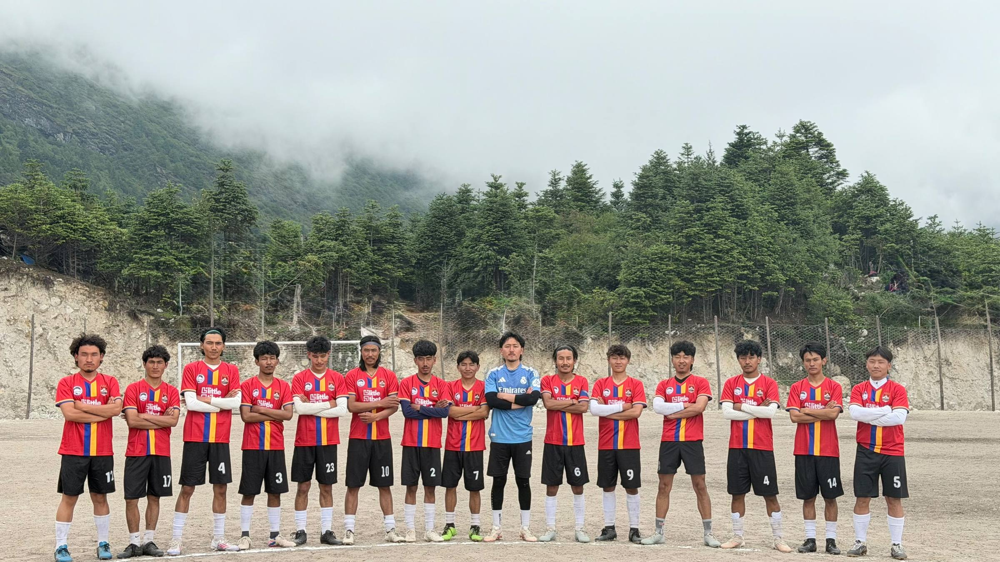
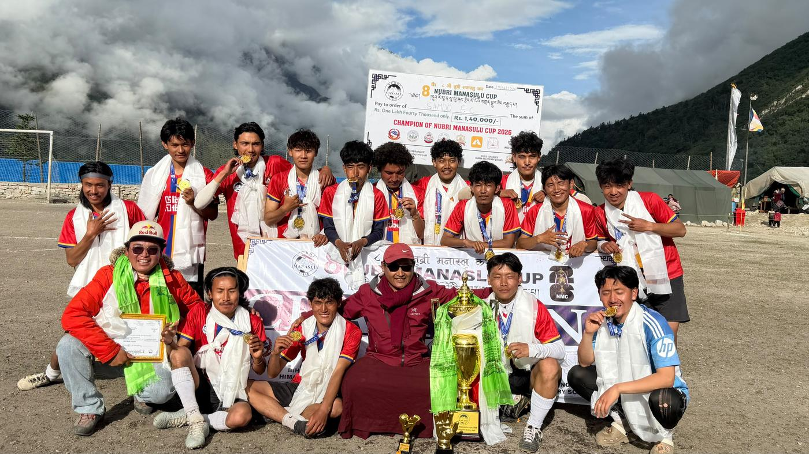

Samdo · Nubri · Nepal — Est. 2016
More than football.
We represent home.
A village at 3,875 metres. A team carried by its people.
2026 · Nubri Manaslu Cup
Champions.
Samdo FC 2–1 Sama A
Goals from Wangchuk and Tashi in the second half. The club's fifth title.
Visit the trophy room →
The people
The 2026 squad
Explore
Every chapter of our story


Our colours
Different kits. Same belonging.


Be part of our next chapter.
Every contribution helps the team travel, train and represent home.